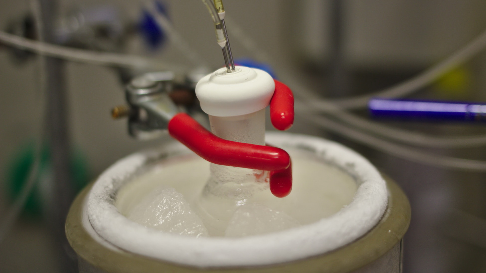

萃取法
萃取法是植物有效成分提取中使用最广泛的一种方法，具有效率高、成本低、规模大的优势。一般来说，只要是有机成分，均可通过萃取法进行提取。
萃取法进行方案设计时要选择合适的萃取剂，并控制影响萃取的因素。萃取剂的选择要综合考虑萃取效率、对人的毒性、是否易燃、有机溶剂是否能从产品中完全除去、会不会影响产品质量等问题。萃取的效率主要取决于萃取剂的性质和使用量，同时还受到原料颗粒大小、紧密程度、含水量、萃取的温度和时间等条件的影响。一般来说，原料颗粒小，萃取温度高，时间长，需要提取的物质就能完全溶解，萃取效果就好。不过需要注意的是，有些有机物不稳定，在高温下容易发生分解，如青蒿素，因此需要控制萃取温度。
文章录入：梅云皓 责任编辑：梅云皓